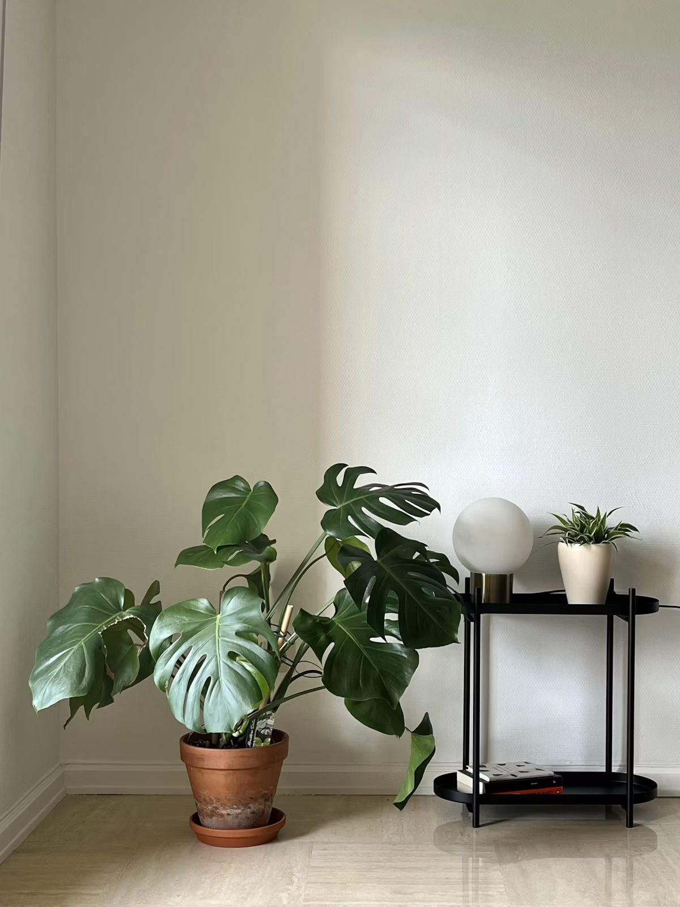
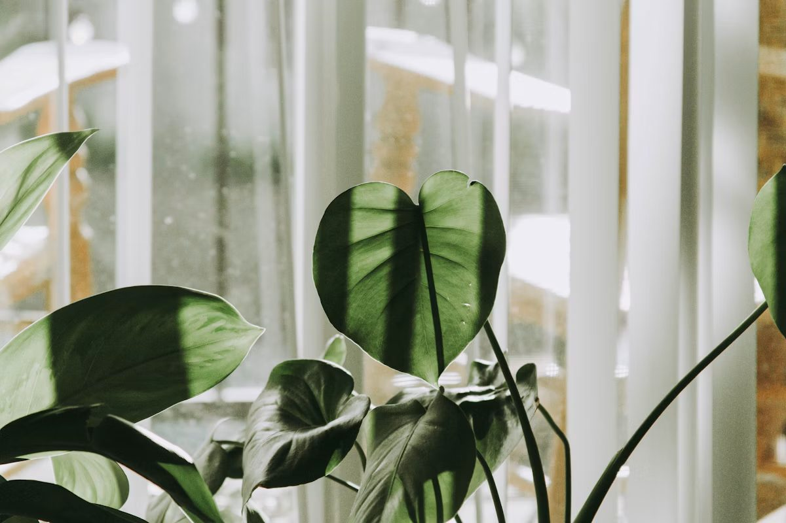

Як зрозуміти, що рослині потрібна вода
Не орієнтуйтеся на розклад, перевіряйте ґрунт пальцем. Жовте листя й пліснява на ґрунті часто означають перелив, а сухі ламкі кінчики — що повітря надто сухе.
Добираємо здорові рослини, надійно пакуємо та допомагаємо піклуватися про них щодня.

Вирощено з любов’юЗнайдіть свою

Не знаєте, що обрати?
Відповідайте на 3 прості запитання про світло, простір і ваш ритм життя.
Про нас
«Зелена кімната» починалася з простої ідеї: рослина має не просто стояти в горщику, а приживатися у вашому домі. Тому ми обираємо лише здорові екземпляри, придатні для кімнатних умов, і не пропонуємо те, у чому не впевнені самі.
Кожну рослину перед відправленням оглядає садівник: перевіряє листя, коріння й ґрунт. Ми надійно пакуємо її для дороги, а після покупки лишаємося на зв’язку: підкажемо, куди поставити, як поливати і що робити, якщо щось пішло не так.
Догляд
Більшість кімнатних рослин люблять яскраве розсіяне світло. Пряме полуденне сонце може обпекти листя, а в темному кутку рослина витягується й блякне.
Поливайте, коли верхній шар ґрунту підсохне на 3–5 см. Надлишок води шкодить більше за її нестачу, тому горщик має мати дренаж.
Монстерам і калатеям до вподоби вологе повітря: протирайте листя вологою ганчіркою. Уникайте протягів і місць просто біля батарей.
З весни до осені підживлюйте рослини раз на 3–4 тижні комплексним добривом. Узимку, коли ріст сповільнюється, майже не підживлюйте.
Кожну оглядає наш садівник перед відправленням.
Надійне пакування та доставка у зручний час.
Особиста інструкція та поради після покупки.
Журнал
Не орієнтуйтеся на розклад, перевіряйте ґрунт пальцем. Жовте листя й пліснява на ґрунті часто означають перелив, а сухі ламкі кінчики — що повітря надто сухе.
Нове місце — це стрес. Поставте рослину в світле місце без протягів, не пересаджуйте її одразу і не переставляйте щодня. Кілька пожовклих листків — нормальна адаптація.
Заміокулькас і сансев’єрія терплять слабке світло та рідкий полив, тому підходять для кабінетів і північних вікон. Якщо світла зовсім мало, додайте лампу для рослин.
Питання й відповіді
Доставка по Києву безкоштовна від 1 500 ₴. Для менших замовлень вартість і зручний час доставки ми уточнимо під час підтвердження.
Протягом 30 днів після покупки ми підтримуємо вас порадами. Якщо рослина приїхала пошкодженою, напишіть нам, і ми знайдемо рішення.
Рослину фіксуємо в горщику, листя обережно загортаємо, а коробку підбираємо за розміром, щоб у дорозі нічого не ламалося.
Так, пройдіть тест на головній сторінці: три запитання про світло, час на догляд і розмір рослини.